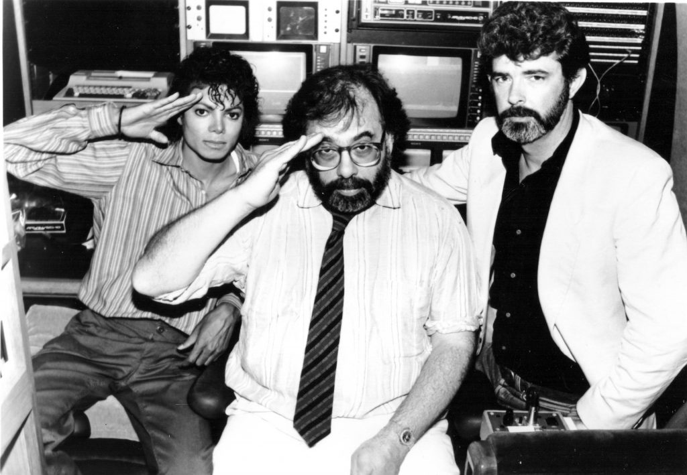
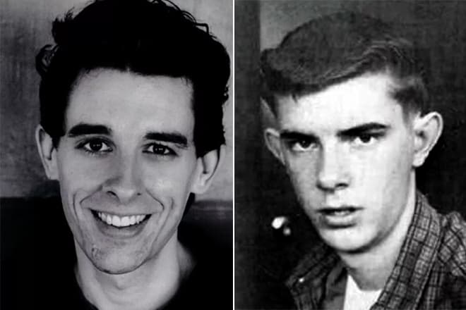
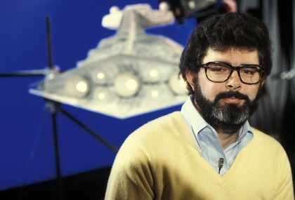
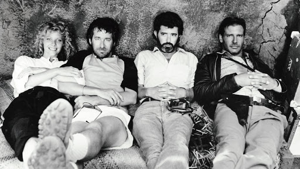

БИОГРАФИЯ
Кинематографическая биография Джорджа Лукаса стартовала в
студенчестве: начинающий режиссер снял документальную короткометражку
об автогонщике Пите Броке, названную «1:42:08: Человек и его автомобиль».
Сюжет Лукасу навеяло юношеское увлечение автогонками. Еще одна
документальная лента – «Свобода», короткометражка о студенте из ГДР.
После выхода на экраны «Звездных войн» имя режиссера ассоциируют
с персонажами саги – джедаями, ситхами, эвоками. Джордж Лукас
оказался творцом целой вселенной, живущей по своим законам.
Но у режиссера, сценариста и продюсера огромное количество и других
проектов в жанре приключенческой фантастики, достойных внимания.
ДЕТСТВО
Родился мастер фантастических бестселлеров в городе Модесто,
в сердце Калифорнии. Родители будущей звезды американской
киноиндустрии к миру кино или иного вида искусства отношения
не имели. Мама – домохозяйка, отец – владелец магазина канцтоваров.
Будучи подростком, Джордж Лукас грезил вовсе не кинематографом.
Парня увлек автоспорт и гонки, Джо мечтал посвятить себя скоростной
трассе. Подросток проводил свободное время, гоняя по подземному
кругу торгово-выставочного центра. Но незадолго до выпускного угодил
в аварию, которая едва не унесла жизнь Джорджа: машину юного гонщика
протаранило другое авто. Множественные травмы и близость смерти
отбили желание гонять на сверхскоростях.
-

- 
- 
- 
- 

ЛИЧНАЯ ЖИЗНЬ
Первой супругой мэтра стала Марсия Луи Гриффин. Джордж Лукас
познакомился с ней во время съемок дебютного эпизода космической саги.
Брак режиссера и Марсии длился 14 лет. В начале 1980-х супруги удочерили
малышку Аманду, взяв девочку из детского дома. Через 2 года пара
рассталась, после развода дочь осталась с отцом.
Вскоре отец-одиночка стал родителем еще для двух ребят: у Аманды
появились сестренка Кэти и брат Джетт. Трое детей Лукаса снялись в
приквел-трилогии космической саги.
В 2013 году продюсер объявил о помолвке с американской бизнес-леди
Меллоди Хобсон, с которой познакомился 7 лет назад. Летом Джордж и Меллоди
поженились, спустя 2 месяца у них родилась дочь Эверест.